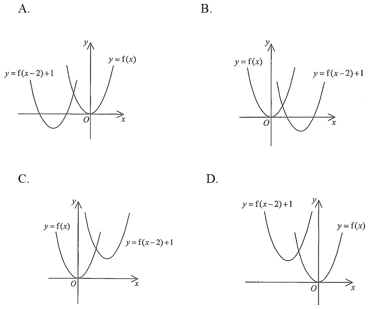

函數及其圖像 · 圖像變換

$$y=f(x)\ \longrightarrow\ y=f(x-2)+1$$
括號內：$x\mapsto x-2$，圖像向右移 $2$ 單位；括號外：$+1$，圖像向上移 $1$ 單位。
因為只是平移，兩條曲線必然全等（同一形狀、同一開口方向）。判斷時只需看：把其中一條向右移 $2$、向上移 $1$，會不會得到另一條。
換句話說，$y=f(x-2)+1$ 的每一點都比 $y=f(x)$ 的對應點「右 $2$、上 $1$」。
A：$y=f(x)$ 在右、$y=f(x-2)+1$ 在左且較低 —— 方向完全相反 ✗
B：$y=f(x)$ 在左、$y=f(x-2)+1$ 在右但較低 —— 左右對，上下錯 ✗
C：$y=f(x)$ 在左、$y=f(x-2)+1$ 在右且較高 —— 右 $2$、上 $1$ ✓
D：$y=f(x-2)+1$ 在左、$y=f(x)$ 在右 —— 變成向左移 ✗
只有 C 圖中兩條曲線的相對位置是「右 $2$、上 $1$」，所以答案為 C。
口訣：括號內加減看左右（相反方向），括號外加減看上下（相同方向）。